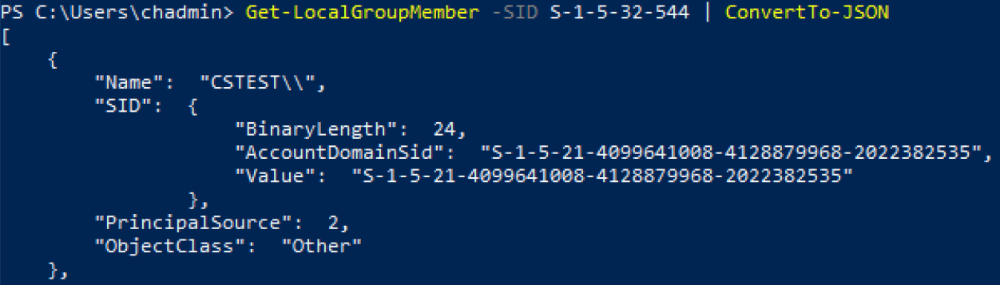

Formerly SecureONE
Symptom and Cause
Error message:
4Domain only applies with name
UI error message in upper right corner of Grant Access page.
Checking this can be done via powershell command below:
Get-LocalGroupMember -SID S-1-5-32-544 | ConvertTo-JSON

The AccountDomainSid value showing incomplete. The example shows the Name value as CSTEST\\ when the complete value should have an account associated with is such as CSTEST\\s1protect.
This causes the return of incomplete data for an account/member within the Local Administrators group.
Resolution
The offending record/member will need to be removed from the local administrator group, once it is determine it is not needed, via the below command:
Remove-LocalGroupMember -Group Administrators -member < DOMAIN >
After the removal of the offending account a rescan of the system should result in a successful message.